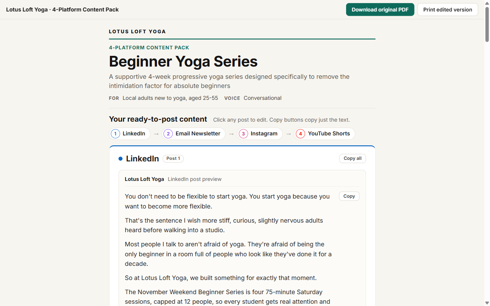
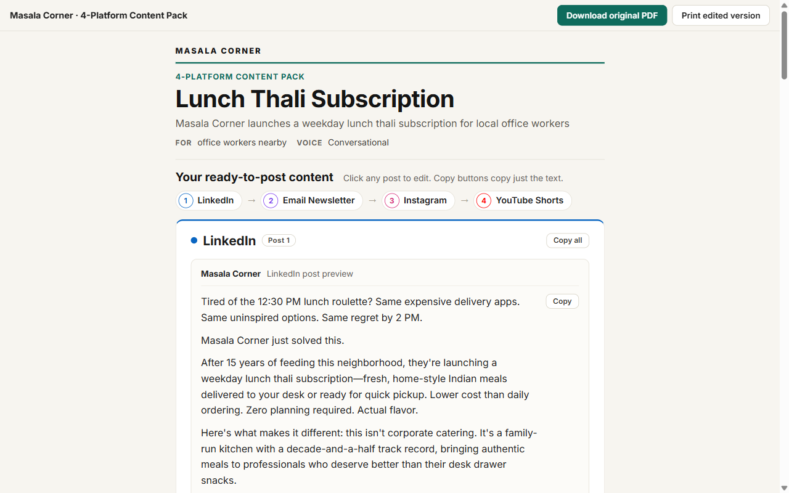
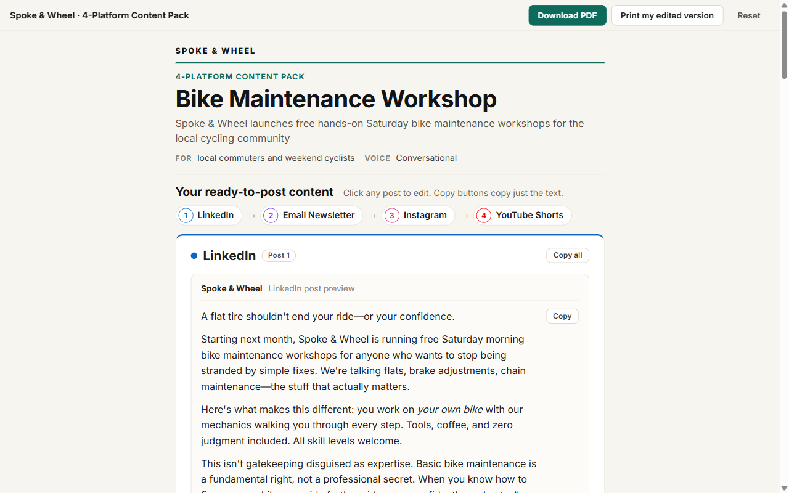
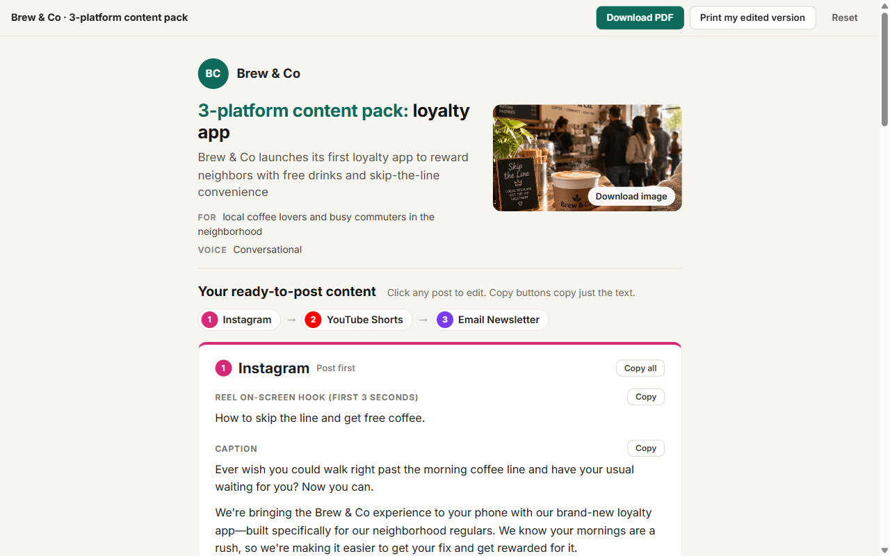
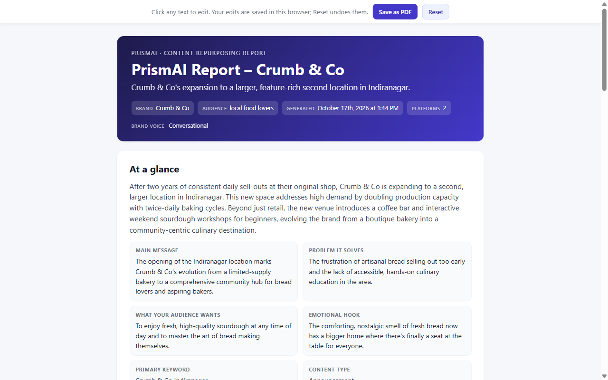

Lotus Loft Yoga
Beginner Yoga Series. LinkedIn, Email Newsletter, Instagram, YouTube Shorts.
Each sample is a content pack PrismAI generated for a fictional test brand: an interactive web report (posts are editable, with Copy and Copy all buttons) and the print-ready PDF that is delivered with it. The latest build is first. The older builds are kept as they shipped, to show the review rounds described in the design iterations. All brands are test or demo brands.

Lotus Loft Yoga
Beginner Yoga Series. LinkedIn, Email Newsletter, Instagram, YouTube Shorts.

Masala Corner
Lunch Thali Subscription. Built before the timeline and Instagram page-break fixes.

Spoke & Wheel
Bike Maintenance Workshop. LinkedIn Copy all still includes the carousel slides.

Brew & Co
Loyalty app. The first redesign: readable PDF text, Copy buttons near the top.

Crumb & Co
Second bakery location. The original layout: 6.7pt PDF text, labels copied with the posts.